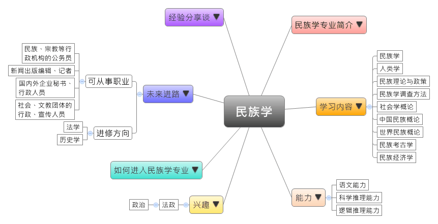
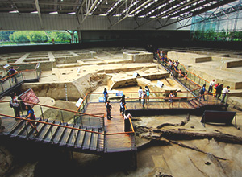

- 专业大观园
-

- 专业介绍
-
什么是民族学专业？
民族学是把民族作为整体进行全面的考察，研究民族的发生、发展和变化的专业。在职场上，民族学培养的人才有较宽的知识面，是适应社会需求的社会科学研究和管理人才，毕业生一般到新闻出版、社会团体、国家机关、文教事业从事工作；在生活中，具备民族学专长对于世界各民族的社会经济结构、政治制度、社会生活、家庭婚姻、风俗习惯、宗教信仰、语言文字、文学艺术、道德规范、思想意识等能用比较客观与包容的态度来面对。
民族学专业除了训练学生全方位的民族学的基本理论认识，也透过民族学调查方法与分析能力，以及口头表达和文字表达能力，让学生兼具语言学及考古学的专才。
进行实地文物调查  参观成都金沙遗址
- 学习内容
-
民族学专业学生主要学习通过分析文献资料，了解各民族的社会生活、风俗习惯、宗教信仰等；由于注重民族学应用能力，学生须接受实地调查、语言学、考古学的专业训练。
本专业学习方向通常会分为三类：人类民族学类、历史学类和社会学类；民族学专业主干课程有：人类学、民族学、民族学调查方法、中国民族概论、世界民族概论、民族考古学、民族经济学、民族理论与政策、社会学概论……等。此外，学生须加选一门以上的少数民族语课程，如：蒙语、藏语、彝语、傣语和维吾尔语进行选修。其他学校也有开设实地调查、分析文献和比较研究等课程，为学生未来就业做好准备。
本专业可以习得的知识与获得之能力、技能列点：第一，系统地掌握社会调查研究的主要方法和技能；第二，对于中国少数民族的相关政策法规、国内外民族学的发展趋势和理论有基本的认识，并能应用；第三，具备使用少数民族语言之口头表述和文字表达能力。
- 能力
-
民族学专业学生，需具备以下能力：
相关性向能力 说明 语文能力  具备跨文化沟通的能力
具备跨文化沟通的能力
能使用少数民族语表达的能力
统整讯息并作适当的少数民族语的翻译科学推理能力 具有抽样调查的能力
熟悉民族学文献检索及数据查询的方法
能通过田野调查，厘清各民族的发生、发展和变化逻辑推理能力 了解国内外民族学界最重要的理论
能掌握体质人类学、语言学及考古学等方面的理论
- 兴趣
-
若你对下列活动或事物有高度兴趣，可考虑进入民族学专业学习：
法政 政治 倾向从事田野调查的工作
对民族历史的演变发展感到兴趣
乐于参与民族事务、民族文化活动与相关法律的制订与修改
- 如何进入此专业
-
下面列举开设民族学专业的重点大学院校：
- 未来进路
-
可从事职业
民族学专业学生有部分毕业后会选择继续升学。民族学的知识较能发挥在社会科学领域的研究与管理上，所以选择在政府机关工作，尤其是民族宗教等行政机构事相当适合；另外，民族学专业学生也可在新闻出版业、社会团体或文教事业，甚或是各企事业单位，从事编辑、文秘、行政、文化交流、文教宣传等工作。在工作职场上皆能发挥跨文化沟通、文献研究等专长。
行业 职业 政府机关（民族宗教） 公务员 新闻出版、文教 编辑、记者、行政人员、营销专员 国内外企业 秘书、文秘、行政人员、营销人员、公关 社会团体 行政人员、宣传人员 进修方向以下列举民族学专业毕业生可以继续修读之学科门类、一级学科与硕士点：
学科门类 一级学科 硕士点 法学 民族学中国少数民族经济、中国少数民族史、民族文化产业、世界民族与民族问题、民族政治学、民族生态学 社会学民俗学、人类学 历史学 考古学考古学及博物馆学、文化遗产管理研究、文化资源与文化、文物保护技术
- 经验分享谈
-
中国民族学博士第一人——庄孔韶
庄孔韶这几年做的不少工作，是在向学术界与大众解释何谓人类学。他师从人类学泰斗、小说《金翼》作者林耀华，1988年获得民族学（人类学）博士学位，是新中国成立后获此学位的第一人。
这场演讲庄孔韶以足球做譬喻，将德国与拉丁美洲的球队进行对比，述说的是背后两国文化的差异，不仅足球如此，其他运动以及仪式里也包含着文化的多样性，而他觉得文化多样性的基础是各族群、文化的平等，相互尊重、相互欣赏才是人类学。
庄孔韶的叔公庄泽宣是中国教育史上重要的学制改革“壬戍学制”的起草者，上世纪前半叶，庄泽宣先生就开始对民族性与国民教育关系的探讨，而受到叔公《教育与民族性》一书的启发，庄孔韶在林耀华指导下完成中国第一部教育人类学专著《教育人类学》。
近几年庄孔韶的研究范围涉及艾滋病防控、临终关怀等公共卫生领域，对于文化民俗完全不同的地区，令管理者们苦恼的问题，对人类学家而言可能只是小课题。【资料来源：张晶晶. 庄孔韶：“捡麦穗”的人类学家[EB/OL].】